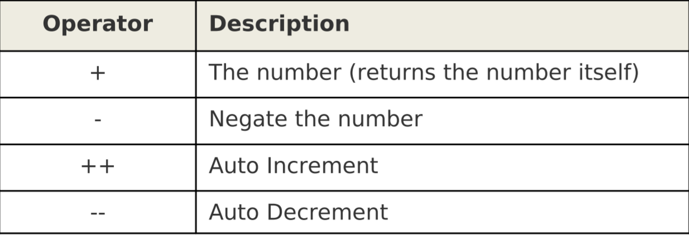
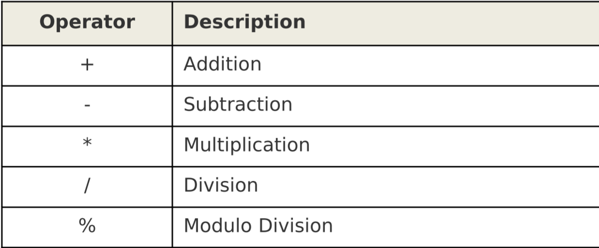

Chapter 10. Awk Variables and Operators
Variables(变量)
- 关键字不能被使用为变量名。
- 和其他的编程语言不同，你不需要声明变量才能使用它。
- 如果你想初始化变量，最好在BEGIN块，它将只执行一次
实例
- $ vi employee-sal.txt
-
- 101,John Doe,CEO,10000
- 102,Jason Smith,IT Manager,5000
- 103,Raj Reddy,Sysadmin,4500
- 104,Anand Ram,Developer,4500
- 105,Jane Miller,Sales Manager,3000
编写一个awk脚本,统计薪水
- $ cat total-company-salary.awk
- BEGIN {
- FS=",";
- total=0;
- }
- {
- print $2 "'s salary is: " $4;
- total=total+$4
- } END {
- print "---\nTotal company salary = $"total;
- $ awk -f total-company-salary.awk employee-sal.txt
- John Doe's salary is: 10000
- Jason Smith's salary is: 5000
- Raj Reddy's salary is: 4500
- Anand Ram's salary is: 4500
- Jane Miller's salary is: 3000
- ---
- Total company salary = $27000
Unary Operators（单元操作符）

和数字前的正负号和C语言的自加自减符号一样
遵循负负得正原则
- $ vi negative.txt
- -1
- -2
- -3
-
- $ awk '{print +$1}' negative.txt
- -1
- -2
- -3
-
- $ awk '{print -$1}' negative.txt
- 1
- 2
- 3
-
- awk '{print ++$1}' negative.txt
- 0
- -1
- -2
-
- awk '{print $1++,$1}' negative.txt
- -1 0
- -2 -1
- -3 -2
Arithmetic Operators(算数运算符)

String Operator(字符串运算符)
空格`是字符串操作符，链接两个字符串string3=string1 string2`
Assignment Operators(赋值运算符)
like C:
=、+=、-=、*=、/=、%=
Comparison Operators(对比运算符)
like C:
>、>=、<、<=、!=、==、&&、||
Regular Expression Operators(正则表达式运算符)
- ~ 匹配正则表达式
- !~ 不匹配正则表达式(匹配不符合的)